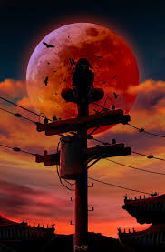

Akatsuki
Akatsuki (暁; literalmente significa: "Amanhecer") foi, inicialmente, uma organização criada por Yahiko e seus dois companheiros, Konan e Nagato, em um esforço para lutar contra a tirania e a opressão que sua aldeia natal, Amegakure, estava enfrentando durante a Terceira Guerra Mundial Shinobi
